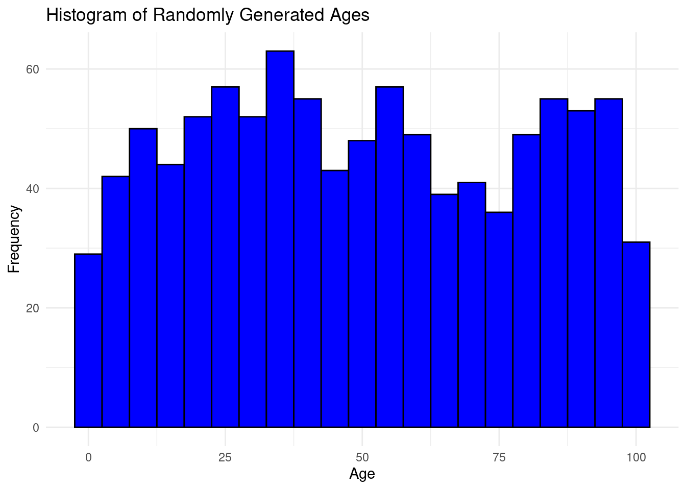
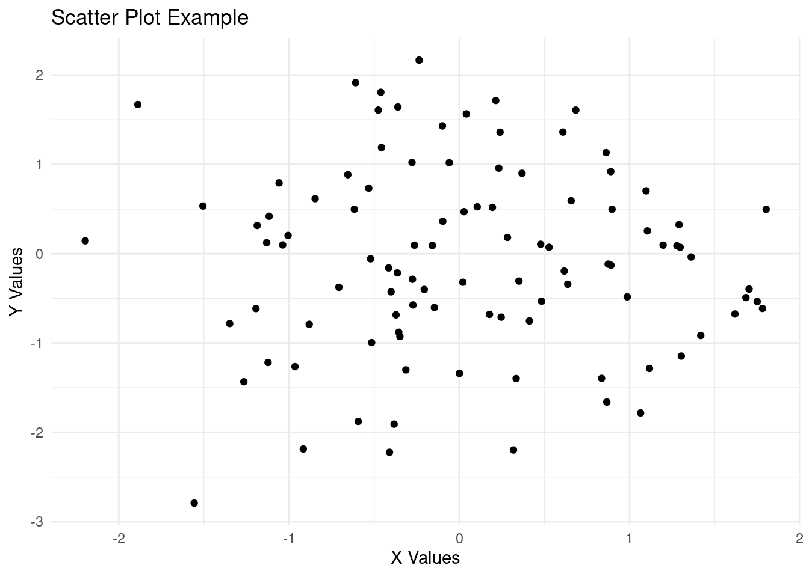

Chapter 4 General Statistics
In this course, we will require the ecommerce data set that can be downloaded from here.
Lets load the data set
## CID TID Gender Age.Group Purchase.Date Product.Category
## 1 943146 5876328741 Female 25-45 30/08/2023 20:27:08 Electronics
## 2 180079 1018503182 Male 25-45 23/02/2024 09:33:46 Electronics
## 3 337580 3814082218 Other 60 and above 06/03/2022 09:09:50 Clothing
## 4 180333 1395204173 Other 60 and above 04/11/2020 04:41:57 Sports & Fitness
## 5 447553 8009390577 Male 18-25 31/05/2022 17:00:32 Sports & Fitness
## 6 200614 3994452858 Male 18-25 12/07/2021 15:10:27 Clothing
## Discount.Availed Discount.Name Discount.Amount..INR. Gross.Amount
## 1 Yes FESTIVE50 64.30 725.304
## 2 Yes SEASONALOFFER21 175.19 4638.992
## 3 Yes SEASONALOFFER21 211.54 1986.373
## 4 No 0.00 5695.613
## 5 Yes WELCOME5 439.92 2292.651
## 6 Yes FESTIVE50 127.01 3649.397
## Net.Amount Purchase.Method Location
## 1 661.004 Credit Card Ahmedabad
## 2 4463.802 Credit Card Bangalore
## 3 1774.833 Credit Card Delhi
## 4 5695.613 Debit Card Delhi
## 5 1852.731 Credit Card Delhi
## 6 3522.387 Credit Card DelhiWe will explore the fundamentals of statistics using the data set that is packed with real-life insights on customers and their purchasing behavior. At the end of this course unit you will be able to understand;
- Measure of spread and central tendency
- Mean(the average)
- Mode
- Quartiles
- Range(IQR, maximum and minimum)
- Standard deviation and variance
- Data Visualizations
- Relationship(scatter plot and heatmaps)
- Trend(line chart)
- Distribution(histograms and density plots)
- Comparison(bar charts)
- Composition (pie charts)
- Outliers (boxplots and violin plots)
- Inferential Statistics
- Hypothesis testing
- T-tests( one sample, anova, chi-square)
4.1 Measure of Spread and Central Tendency
Central tendency identifies the center or typical value of a data set. Measuring central tendency summarizes the data by identifying skewness, distribution and how the data is robust to outliers. Business calculate the central tendencies like average sales, median customer age to make informed decision-making.
Here are some of the statistical concepts used to define central tendecy and spread;
- Mean
- Mode
- Quartiles(Median, upper and lower quartile)
- Range and IQR
- Variance and standard deviation
a.Arithmetic mean
It is also referred to as the average. It is the sum of all values divided by the number of values in the set. R has a function mean to calculate the average.
Here is the formula for mean; \[\overline{x} ={ \sum^{n}_{i=1}x_i\over{n}}\]
Where;
- \(\overline{x}\) is the mean
- \(x_i\) represent value at position \(i\)
- \(n\) is the number(count) of values in a set
Lets calculate the average net amount spent on the ecommerce store.
## [1] 2875.95The average amount spent on the e-commerce store by all the customers was 2875.95 INR.
- Mode
The mode shows the most frequent value, thereby pinpoint the most popular categories in a data set. In the commerce data set we will find the most popular category and age group in the data set.
Find the most popular category
##
## Beauty and Health Books Clothing Electronics
## 8332 2762 10968 16574
## Home & Kitchen Other Pet Care Sports & Fitness
## 5489 2171 1618 5557
## Toys & Games
## 1529## Electronics
## 4- Quartiles
____Come back later_____
- Range
To understand range, we will define, maximum and maximum values. The maximum value is the largest value in a set while the minimum is the smallest value in a set. Range is the difference between the maximum(largest value) and the minimum value in a set.
Here is a formula for range; \[Range = Max - Min\]
Lets create a vector ages that defines the ages of different customers on a retail stores, find the maximum and minimum ages then calculate the range.
## [1] 87## [1] 13## [1] 74Try it!
Now its clear what range, lets get into the real-world scenario. We will find the maximum and minimum Gross.Amount spent on the ecommerce store. Finally, we calculate the range of amount spent by customers(Gross.Amount)
## [1] 8394.826## [1] 136.4543## [1] 8258.371- Standard deviation and Variance
Variance is statistical measure of dispersion that defines how spread the data points are in a data set in relation to the mean of the data set. Standard deviation is the measure of how data is clustered around the mean. It is simply defined to as the square root of variance.
Here is the formula of variance; \[\sigma = {\sum(x_i - \overline{x})^2 \over{n}}\]
Where;
- \(\sigma\) is the variance
- \(x_i\) is the value
- \(\overline{x}\) is the population mean
- \(n\) is the value count
Standard is simply the square root of variance, Here is the formula for standard deviation; \[S = \sqrt{\sigma}\] or \[S = \sqrt{{\sum(x_i - \overline{x})^2 \over{n}}}\]
Where \(S\) is the standard deviation.
Variance and standard deviation can be calculated in R environment using var() and sd() functions respectively.
Lets create a vector of weights of the athletes in kilograms and calculate the variance and standard deviation.
# Sample vector
athlete_weights = c(55, 76, 52, 68, 71, 63, 58, 52, 85, 96)
# Calculate variance
var(athlete_weights)## [1] 216.7111## [1] 14.72111Lets put into real world practice and calculate variance and standard deviation of net amount spent on the ecommerce store.
## [1] 2979517## [1] 1726.128Practical Exercise
Solution
________________________________________________________________________________
4.2 Data Visualization
Data visualization is the process of using visual elements like chart, graphs or maps to represent data in a way that is easier to understand.
Luckily, R has a package, ggplot2, specifically designed to create charts and graphs. The package is said to implement the “Grammar of Graphics” that is a conceptual framework for creating graphs by Leland Wilkinson.
The package can be installed by;
install.packages("ggplot2")and once the package is installed it is loaded by;
Lets create simple charts with the ggplot2 package.
- Scatter plots
Scatter plot is used to show the numerical relationship between two or more. Lets create a simple plot.
# Sample data
df <- data.frame(
x = rnorm(100),
y = rnorm(100)
)
# Creating a scatter plot
ggplot(df, # data
aes(x = x, y = y)) + #aesthetics
geom_point() + #geometrics
labs(title = "Scatter Plot Example", x = "X Values", y = "Y Values") +
theme_minimal()Try it!
Lets make it more interesting by exploring the real world scenario where we will visualize the relationship between Discount and the Net Amount on the ecommerce store.
# Creating a scatter plot
ggplot(ecommerce[1:100, ], # first 100 rows of the data
aes(x = Net.Amount, y = Discount.Amount..INR.)) + #aesthetics
geom_point() + #geometrics
labs(title = "Relationship between Net Amount and the Discount",
x = "Net Amount",
y = "Discount") +
theme_minimal()The scatter chart above shows that there is no clear relationship between the Net Amount spent and the discount offered since at every spending(low, medium or high) had low or high discount. High spending did not necessarily guarantee low or high discount.
- Line Chart
Line Chart is used to show trend(Growth or fall over time). Let create a simple line chart to show this;
# Sample data
dates <- c("2023-10-01", "2023-10-05", "2023-10-10", "2023-10-15", "2023-10-20", "2023-10-25", "2023-10-30", "2023-11-04", "2023-11-09", "2023-11-14")
scores <- c(75, 82, 88, 85, 90, 87, 92, 95, 98, 100)
# Create a data frame
df <- data.frame(
date = as.Date(dates),
scores = scores
)
# Plot a scatter plot
ggplot(df, # data
aes(x=date, y=scores)) +
geom_line()+
labs(
title = "Scores progression from October to November",
x = "Date",
y = "Scores"
) +
theme_minimal()
There has a been a gradual increase of scores from October to November.
Try it!
Lets put this into a real world scenario. We will plot the Gross Amount spent by Customers over the years at the ecommerce store.
# Convert the purchase date to date type
ecommerce$Purchase.Date <- as.Date(ecommerce$Purchase.Date)
# Plot a scatter plot
ggplot(ecommerce[1:100, ], # data
aes(x=Purchase.Date, y=Gross.Amount)) +
geom_line()+
labs(
title = "Gross Amount spent over time",
x = "Purchase Date",
y = "Gross Amount"
) +
theme_minimal()
There has been gradual spikes of rise and fall of the amount spent on the store.
- Histograms and Density Plots
Histograms and Density plots are used to show the distribution of continuous variables. Histogram is visually similar to the bar chart however it is used show frequency and distribution across a list-like data set(vectors, lists, sets, arrays, etc) that stores continuous numeric values. The count of observation within a certain range of values are displayed.
Lets create a vector of random 100 ages and plot the data to a histogram.
# Generate random 1000 ages between 0 and 100
set.seed(42)
ages <- sample(0:100, 1000, replace = TRUE)
# Create a data frame to use with ggplot
age_data <- data.frame(Age = ages)
# PLOTTING
# Create the histogram using ggplot
ggplot(age_data, aes(x = Age)) +
geom_histogram(binwidth = 5, fill = "blue", color = "black") +
labs(
title = "Histogram of Randomly Generated Ages",
x = "Age",
y = "Frequency") +
theme_minimal()
The bins are groups of ages ranging 5 years
Try it!
Lets put his into action and plot the distribution of Discount offered on the ecommerce store
# Create the histogram using ggplot
ggplot(ecommerce,
aes(x = Discount.Amount..INR.)) +
geom_histogram(bins = 10, fill = "blue", color = "black") +
labs(
title = "Histogram of Discount offered",
x = "Discount",
y = "Frequency") +
theme_minimal()
The distribution is right skewed and most of the customers in the store were offered very low discount for their purchases.
Check it later and speak about density plots
- Bar Charts
Bar charts are used to represent both categorical and numeric data in form of rectangular bars. The length/height of each category represents its numeric value. It may corresponds to either length, count, age or any other numerical value. Bar charts are used when;-
- Comparing categorical data
- Visualizing summarized data for instance aggregated sum, average or any other summary statistics.
- Showing frequency or count for instance representing the number of products sold per each category.
- Ranking data. Bar charts can effectively represents ranks especially in descending/ascending order for instance ranking the life expectancy of different countries.
- Other type of complex bar charts like stacked bar charts can be used to compare part-to-whole relationships.
There are many more uses of bar charts however there are some use cases where bar charts are not preferred like when working with continuous data, scatter and line charts are more befitting. Also, bar charts are not appropriate where data has too many categories, heatmaps will do better.
To create a simple bar chart using ggplot2, we use geom_bar to define that its a bar chart.
# Sample data
df <- data.frame(
category = c("A", "B", "C", "D"),
value = c(23, 17, 35, 10)
)
## The data set above will be used to create a bar chart
# Creating a bar chart
ggplot(df,
aes(x = category, y = value)) +
geom_bar(stat = "identity") +
labs(
title = "Value by Category",
x = "Category",
y = "Value") +
theme_minimal()
From the bar chart above, Category “C” has the largest value while category “D” has the lowest value.
Try it!
Lets create a bar chart of a real world scenario. We will calculate the Gross amount spent by different age groups in the ecommerce store.
_______Plot a bar chart________